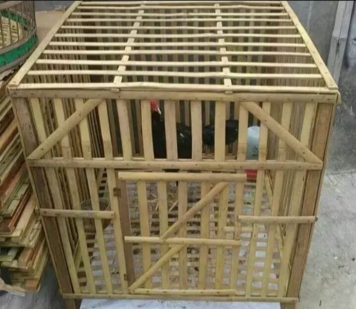

Tips Membuat Kandang Umbaran yang Ideal untuk Latihan Fisik

Kandang umbaran bukan hanya tempat menjemur, tapi juga "gym" bagi ayam. Kandang yang baik akan memaksimalkan hasil latihan fisik.
Ukuran Ideal
Semakin luas semakin baik, tapi ukuran ideal minimal adalah:
- Panjang: Minimal 2 meter.
- Lebar: 1 meter.
- Tinggi: 1 meter (atau lebih agar Anda mudah membersihkan).
Alas Kandang (Penting!)
Alas kandang sangat mempengaruhi pembentukan otot kaki.
- Pasir: Sangat direkomendasikan. Pasir melatih kekuatan cengkeraman jari kaki dan menjaga kaki tetap kering (menghindari bubul).
- Tanah: Pilihan kedua yang baik. Ayam bisa "kipu" (mandi tanah) untuk membersihkan bulu. Pastikan tanah tidak becek.
Atap dan Sinar Matahari
Kandang umbaran harus mendapat sinar matahari pagi (sebelum jam 10) secara langsung. Beri atap di sebagian kandang (misal 50%) agar ayam bisa berteduh saat matahari terlalu terik.
← Kembali ke Daftar Artikel